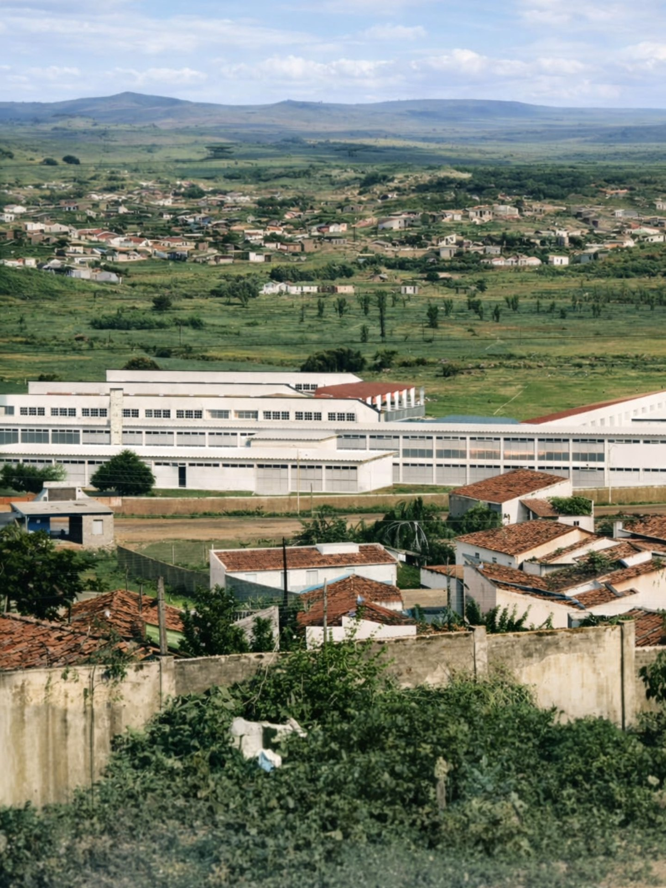
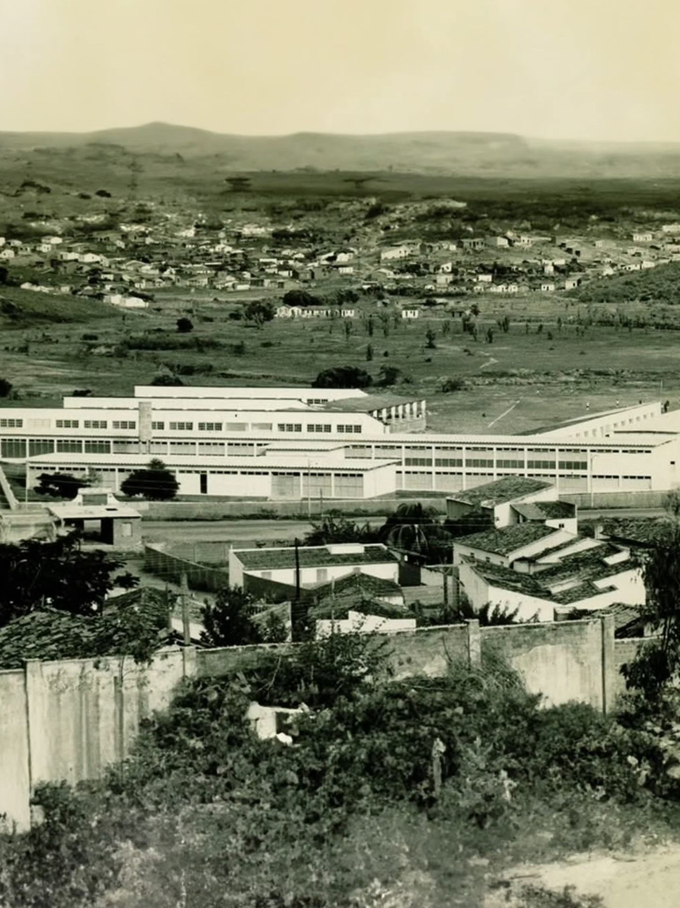
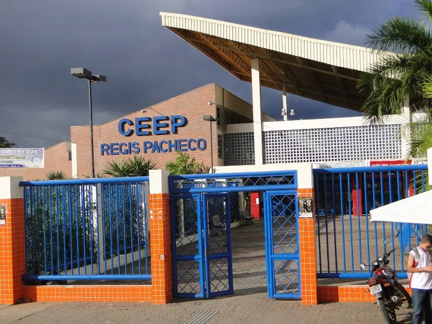

Fundado em 14 de dezembro de 1948, o Instituto de Educação Régis Pacheco (IERP) é um verdadeiro símbolo de história, formação e transformação em Jequié. Ao longo das décadas, a instituição contribuiu para a formação de gerações de estudantes e profissionais, acompanhando o crescimento da cidade e se reinventando com o tempo. Hoje, o Régis Pacheco segue como referência no ensino público, unindo tradição, educação e futuro no coração de Jequié. ➡️ O IERP foi oficialmente criado em 14 de dezembro de 1948, quando ainda era conhecido como Ginásio Público Régis Pacheco. Sua primeira aula inaugural aconteceu em 19 de março de 1952. 📍 Localização e Estrutura Atual Hoje, a instituição é conhecida como Centro Estadual de Educação Profissional em Gestão e Tecnologia da Informação Régis Pacheco (CEEP Régis Pacheco), e está localizada no bairro Campo do América, em Jequié.


O Colégio Estadual de Educação Profissional Régis Pacheco (CEEP) desempenha um papel fundamental no desenvolvimento educacional e social de Jequié. A instituição é reconhecida por oferecer ensino de qualidade aliado à formação técnica profissional 🎓 Isso permite que os estudantes saiam mais preparados para o mercado de trabalho. Além disso, o colégio contribui diretamente para o crescimento econômico da região. Ao formar jovens qualificados, fortalece diversos setores produtivos locais. O CEEP também promove inclusão social por meio do acesso à educação pública de excelência. Muitos alunos encontram ali oportunidades que transformam suas realidades. A escola incentiva o pensamento crítico e a cidadania ativa. Seus projetos pedagógicos valorizam tanto o conhecimento teórico quanto a prática profissional. Outro ponto importante é o estímulo à inovação e ao empreendedorismo 💡 Os estudantes são encorajados a desenvolver soluções criativas para desafios reais. A instituição também se destaca pelo compromisso com a comunidade. Frequentemente, realiza ações e projetos que beneficiam a população de Jequié. O ambiente escolar é acolhedor e propício ao aprendizado. Professores qualificados atuam com dedicação e responsabilidade. O CEEP Régis Pacheco contribui para a construção de futuros mais promissores. Seus ex-alunos carregam consigo uma formação sólida e diferenciada. A escola se tornou referência em educação profissional na região. Seu impacto vai além da sala de aula, alcançando toda a sociedade. Assim, o CEEP reafirma sua importância como agente transformador em Jequié.

O Colégio Estadual de Educação Profissional Régis Pacheco reafirma, ao longo de sua trajetória, o compromisso com a formação integral de seus estudantes 🎓 Mais do que preparar para o mercado de trabalho, a instituição forma cidadãos conscientes e participativos. Em Jequié, seu papel vai além da educação, contribuindo para o desenvolvimento social e humano da região. Cada projeto realizado reflete a dedicação em construir um futuro mais justo e igualitário. A escola se consolida como um espaço de oportunidades e transformação. Seus alunos são incentivados a acreditar em seu potencial e buscar novos caminhos. O aprendizado adquirido ultrapassa os limites da sala de aula. Ele acompanha os estudantes em suas jornadas pessoais e profissionais. O compromisso com a qualidade e a inovação segue como base de sua atuação. A comunidade escolar, unida, fortalece ainda mais esse propósito. O CEEP Régis Pacheco continua escrevendo sua história com responsabilidade e visão de futuro. Assim, a instituição se mantém como referência e inspiração para novas gerações 🌟 Seu legado é construído diariamente, com dedicação e esperança. E é nesse caminho que a escola segue, transformando vidas e construindo sonhos.